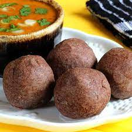

Ragi Mudde, or finger millet balls, is a traditional South Indian dish that is highly nutritious and filling. It is typically enjoyed with spicy sambar or curry, making it a wholesome and satisfying meal.
Ingredients
- 1 cup Ragi Flour
- 2 cups Water
- 1/2 tsp Salt
- 1 tbsp Ghee (optional, for added flavor)
Step-by-Step Instructions
- In a saucepan, bring 2 cups of water to a boil. Add salt.
- Gradually add the ragi flour to the boiling water, stirring continuously to avoid lumps.
- Reduce the heat and cook while stirring until the mixture thickens and starts to pull away from the sides of the pan.
- Cover and let it cook for another 5 minutes on low heat.
- Remove from heat and let it cool slightly. Grease your hands with a little ghee and shape the mixture into balls.
- Serve hot with sambar, curry, or any side dish of your choice.